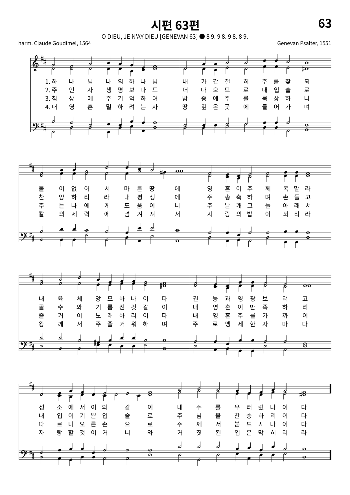

Psalm 63
O DIEU, JE N’AY DIEU [GENEVAN 63] · 8 9. 9 8. 9 8. 8 9.
English title: Thou Art My God, I Seek Thy Face
Tune: Genevan Psalter, 1551 · Harmony: Claude Goudimel, 1564 · Lyrics: Korean adaptation of Psalm 63 from the Korean Revised Version (AI draft adaptation · not yet theologically reviewed) · 4 stanzas
Score PDF MusicXML (for printing) MusicXML (for accompaniment, with prelude and repeats) Read Psalm 63 (Korean Revised Version)
Score
← Psalm 62 ListAccompaniment (in preparation)Psalm 64 →
Lyrics (Korean)
Stanza 1 (Ps. 1~2)
하나님 나의 하나님
내가 간절히 주를 찾되
물이 없어서 마른 땅에
영혼이 주께 목말라
내 육체 앙모하나이다
권능과 영광 보려고
성소에서 이와 같이
내 주를 우러렀나이다
하나님 나의 하나님
내가 간절히 주를 찾되
물이 없어서 마른 땅에
영혼이 주께 목말라
내 육체 앙모하나이다
권능과 영광 보려고
성소에서 이와 같이
내 주를 우러렀나이다
Stanza 2 (Ps. 3~5)
주 인자 생명보다도
더 나으므로 내 입술로
찬양하리라 내 평생에
주 송축하며 손 들고
골수와 기름진 것 같이
내 영혼이 만족하리
내 입이 기쁜 입술로
주님을 찬송하리이다
주 인자 생명보다도
더 나으므로 내 입술로
찬양하리라 내 평생에
주 송축하며 손 들고
골수와 기름진 것 같이
내 영혼이 만족하리
내 입이 기쁜 입술로
주님을 찬송하리이다
Stanza 3 (Ps. 6~8)
침상에 주 기억하며
밤중에 주를 묵상하니
주는 나에게 도움이니
주 날개 그늘 아래서
즐거이 노래하리이다
내 영혼 주를 가까이
따르니 오른손으로
주께서 붙드시나이다
침상에 주 기억하며
밤중에 주를 묵상하니
주는 나에게 도움이니
주 날개 그늘 아래서
즐거이 노래하리이다
내 영혼 주를 가까이
따르니 오른손으로
주께서 붙드시나이다
Stanza 4 (Ps. 9~11)
내 영혼 멸하려는 자
땅 깊은 곳에 들어가며
칼의 세력에 넘겨져서
시랑의 밥이 되리라
왕께서 주 즐거워하며
주로 맹세한 자마다
자랑할 것이거니와
거짓된 입은 막히리라
내 영혼 멸하려는 자
땅 깊은 곳에 들어가며
칼의 세력에 넘겨져서
시랑의 밥이 되리라
왕께서 주 즐거워하며
주로 맹세한 자마다
자랑할 것이거니와
거짓된 입은 막히리라